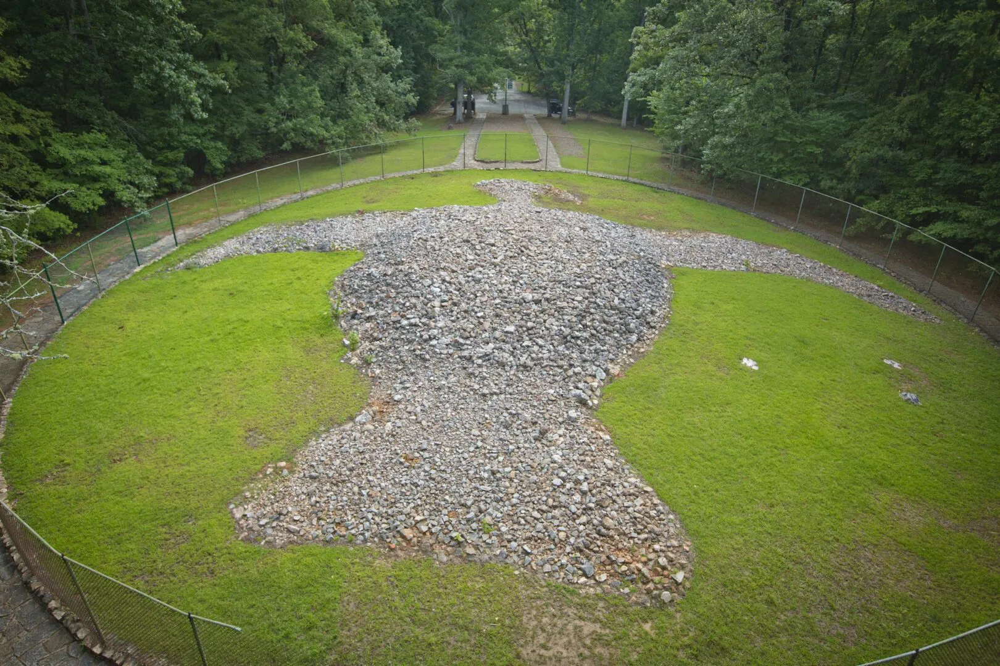
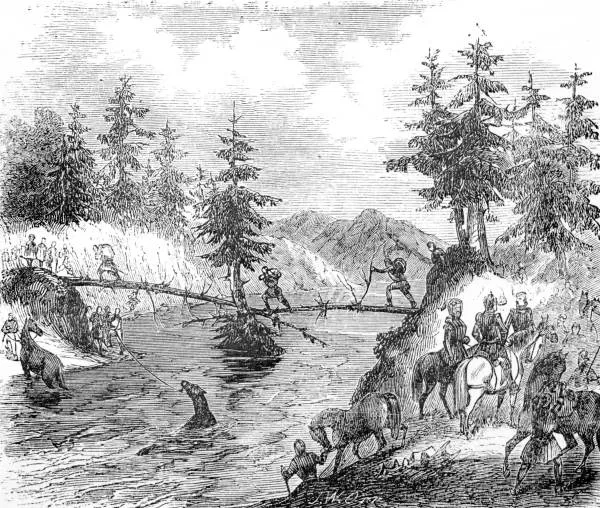
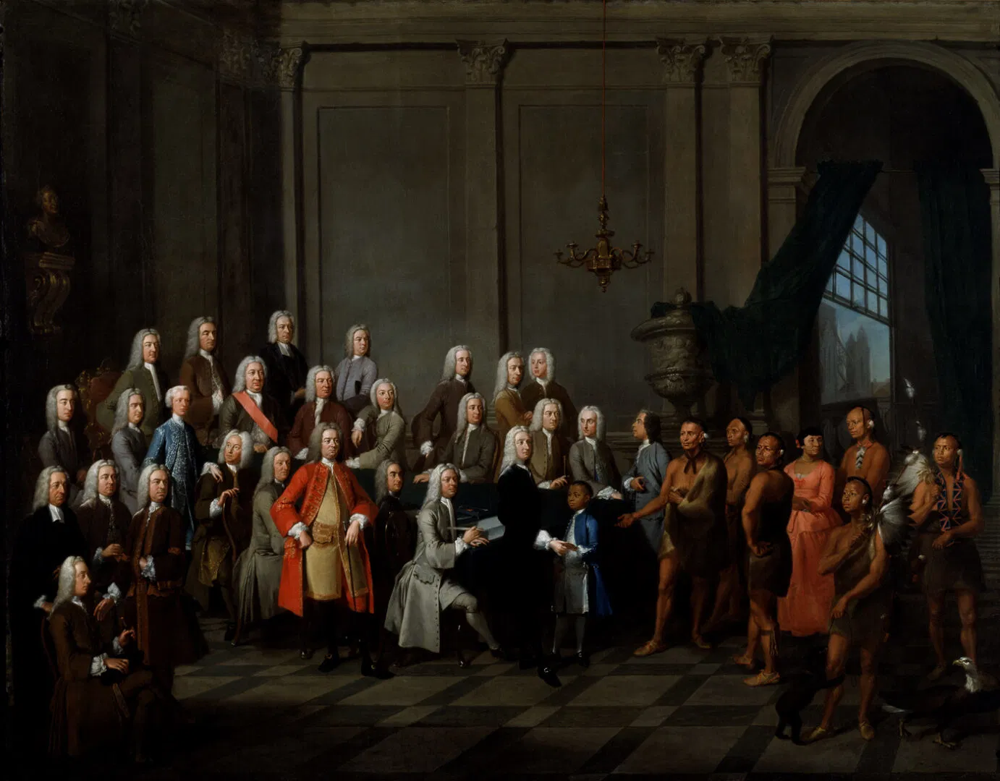
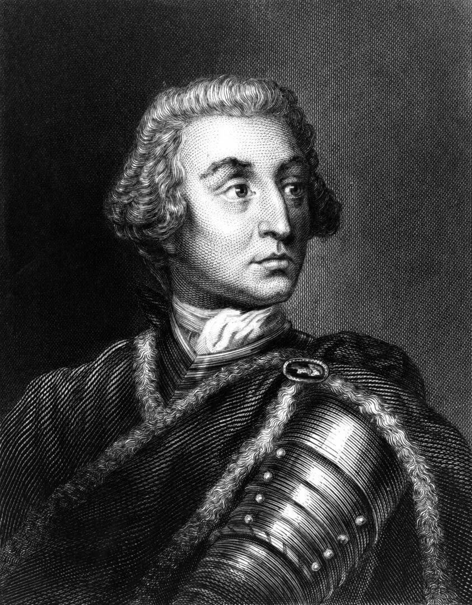
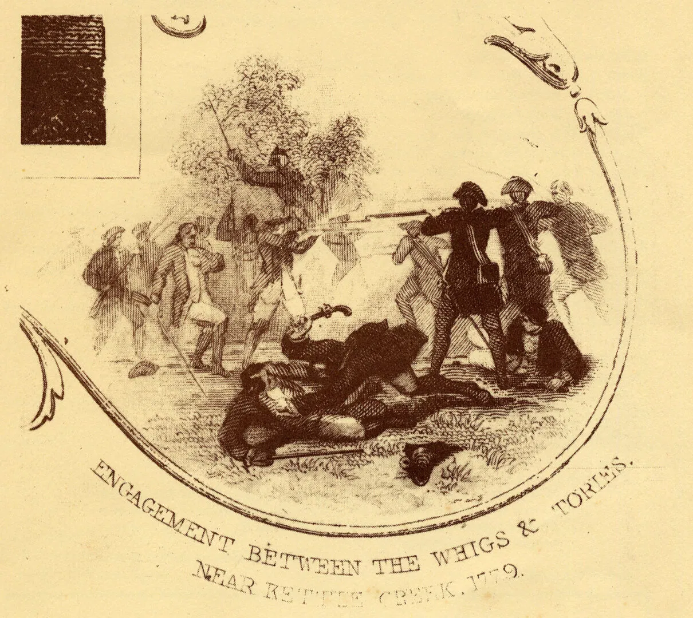
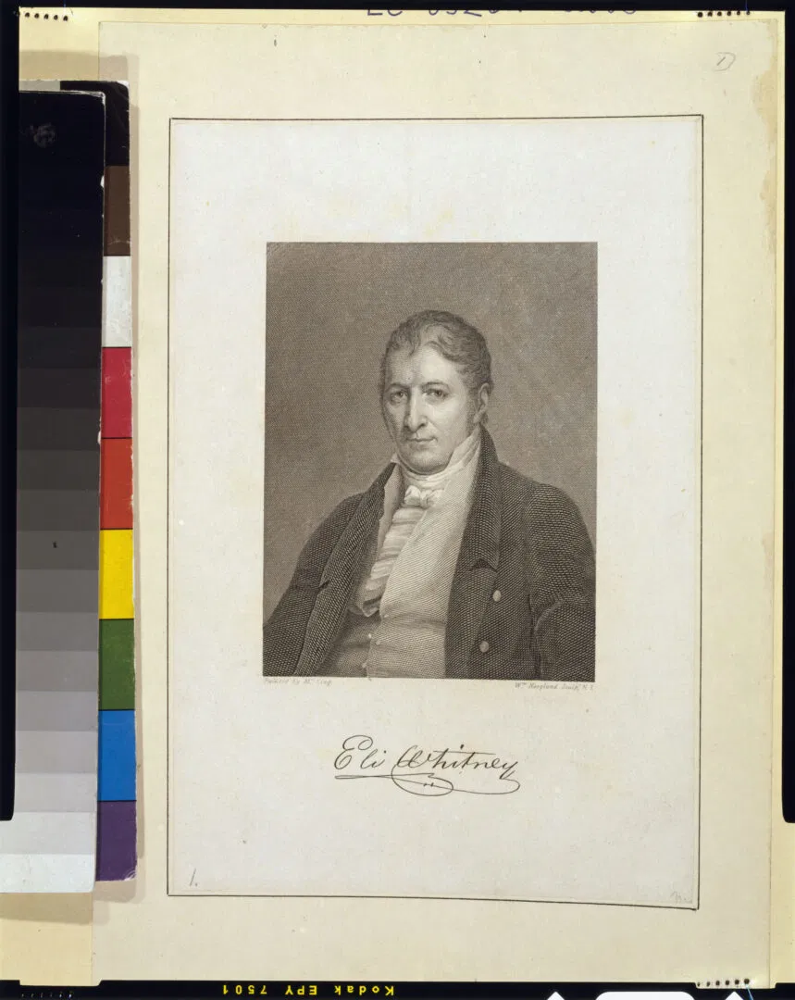
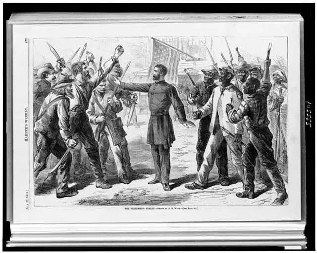
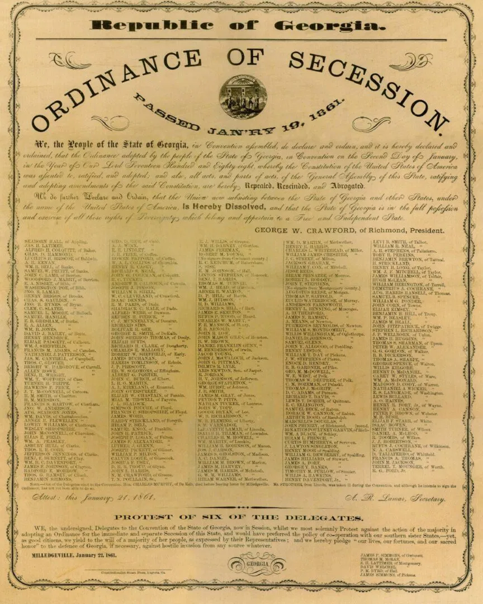

History
Before European Arrival: The Land of Native Tribes

Long before Europeans set foot on its soil, Georgia was home to Native American tribes who lived in semi-primitive societies organized around tribal structures rather than centralized nations. These communities thrived amid the forests, rivers, and mountains, cultivating the land and preserving traditions that would later be forever changed.
Early European Contact: Spanish Missions and Retreat

In the 16th century, Spanish explorers ventured into Georgia’s coastal regions, establishing small missionary settlements. However, the area's dense forests, oppressive heat, rampant diseases, and fierce resistance from Native tribes made colonization difficult and largely unprofitable. By the early 18th century, Spain had largely withdrawn from the region.
The British Era: Founding of Georgia

In 1733, British settlers arrived and founded the colony of Georgia, named in honor of King George II. Early settlers expanded south from the Carolinas, developing key ports like Savannah and Brunswick. Georgia’s coastal and inland settlements became crucial outposts amid rising tensions with Spanish forces to the south.
Colonial Challenges and Growth

Despite threats from Spanish Florida and conflicts with Native Americans, the British colonies in Georgia gradually expanded. However, settlers faced constant battles with disease and the harsh, humid environment. Georgia remained the last of the original Thirteen Colonies to be established and was the fourth state to ratify the U.S. Constitution in 1788.
The Rise of Plantations and the Slave Economy

Georgia’s fertile Atlantic coastal plains required intensive labor to cultivate crops like cotton and sugarcane. The decimation of Native populations and scarcity of European labor led to the expansion of African slavery. Enslaved Africans became the backbone of Georgia’s agricultural economy, making it one of the wealthiest Southern states before the Civil War.
Secession and the Civil War

With growing national tensions over slavery, Georgia, heavily reliant on enslaved labor, seceded from the Union in 1861 to join the Confederacy. During the Civil War, Georgia suffered economically under Union blockades and, later, physically during General Sherman’s infamous "March to the Sea" in 1864, which left Atlanta in ruins.
Reconstruction and Political Shifts

After the Confederacy’s defeat in 1865, Georgia abolished slavery and rejoined the Union in 1870, the last of the Confederate states to do so. Though reintegrated, political power in Georgia quickly returned to Southern Democrats, leading to decades of institutionalized racial segregation and disenfranchisement of African Americans.
The Struggles of the Jim Crow Era

By the 1890s, Georgia had fully embraced Jim Crow laws, stripping Black citizens and poor whites of their voting rights and enforcing racial segregation across all aspects of life. Rural economies, dependent on a fading agricultural base, declined, and migration out of Georgia accelerated, particularly among African Americans seeking better opportunities in the North.
Civil Rights Movement and Urban Transformation

Atlanta emerged as a vital center of the Civil Rights Movement in the 1960s, with leaders like Dr. Martin Luther King Jr. advocating for equality and justice. Following King’s assassination in 1968, the city faced riots and a dramatic demographic shift as many white residents fled to the suburbs.
Modern Revitalization and Growth
The 1996 Summer Olympics in Atlanta marked a turning point for Georgia, fueling economic revitalization and global visibility. Savannah’s modernization as a major port and an influx of new residents from Northern states spurred rapid population growth. By 2020, Georgia’s population had surpassed ten million, making it one of the fastest-growing states in the nation..